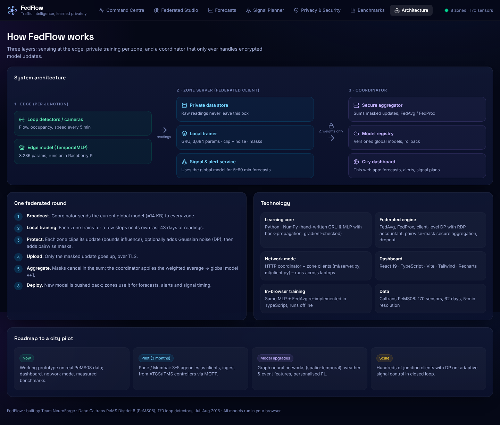
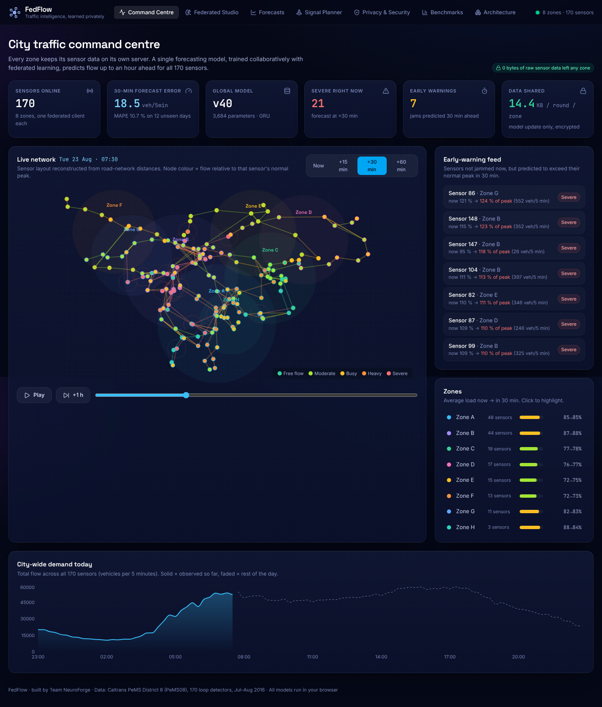
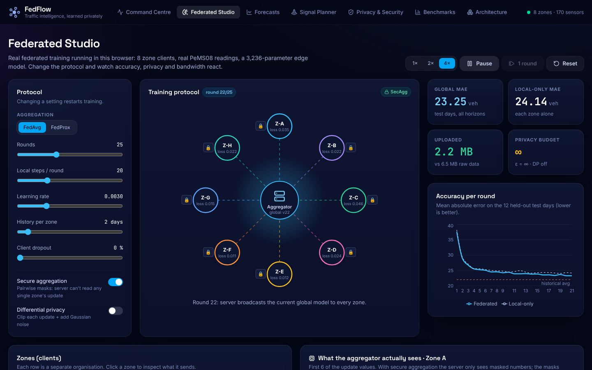
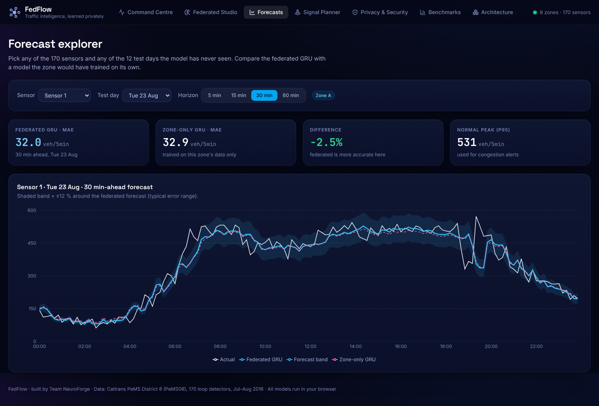
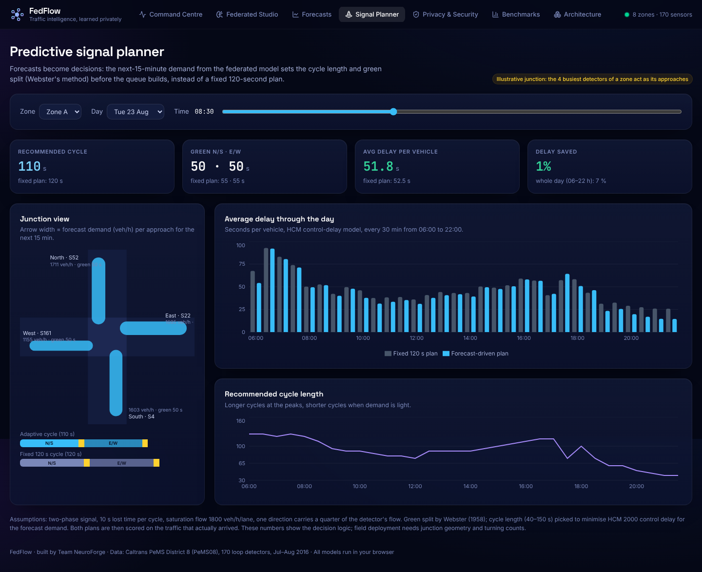
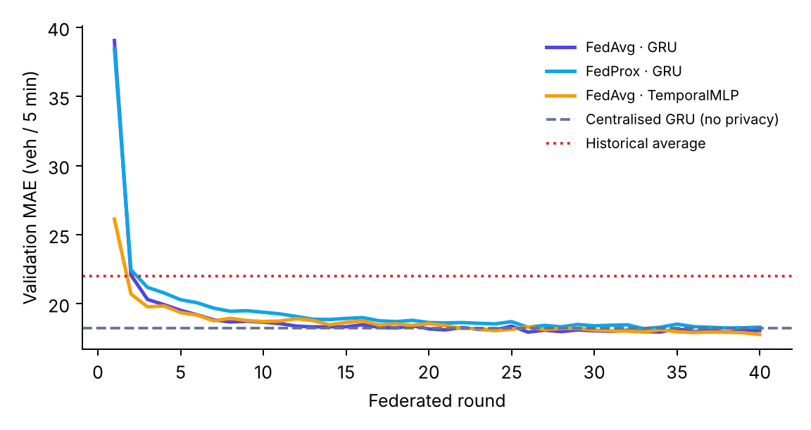
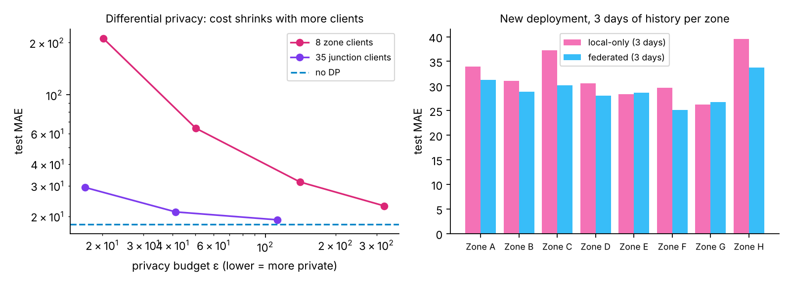

1. The project in one page
The 60-second pitch (memorise this)
What we built (the five things to point at)
| # | Piece | What it proves |
|---|---|---|
| 1 | Federated learning engine (Python, NumPy) | FedAvg, FedProx, secure aggregation, differential privacy with a privacy accountant, client dropout. Models with hand-written back-propagation, gradient-checked. |
| 2 | Measured benchmarks on PeMS08 | 10 methods compared on 12 unseen test days, 4 horizons; scarce-data, cold-start, DP-at-scale and dropout experiments. |
| 3 | FedFlow web app (7 screens) | Live city command centre, real federated training running in the browser, forecast explorer, predictive signal planner, privacy page, benchmarks, architecture. |
| 4 | Network mode (server.py + client.py) |
Real federated training across separate machines over HTTP, with Diffie–Hellman-based secure aggregation. |
| 5 | Deployable | Static site: works offline on a laptop, or live on Vercel / Netlify / GitHub Pages in minutes. |
Headline numbers
2. The problem and why federated learning
The problem statement in our words
Predict short-term traffic flow (vehicles per 5 minutes) at every sensor of a city, 5 to 60 minutes ahead, when the data is distributed across organisations that cannot share it. That last part is what makes it a federated-learning problem rather than an ordinary forecasting problem.
Why data cannot simply be pooled
- Ownership and law. Different agencies own the sensors. India's DPDP Act 2023 pushes data minimisation and purpose limitation; camera / ANPR data can reveal movement of people.
- Security. One central database of a whole city's movement is a high-value target.
- Politics and cost. Agencies do not want to give away data; shipping and storing every raw reading centrally costs bandwidth and storage forever.
Why each agency on its own is not enough
- A zone sees only its own roads, so it learns from fewer patterns (fewer peak-hour events, fewer incidents).
- New zones have no history at all (new sensors, new flyover, new smart-city ward). They cannot train anything for weeks.
- Small zones (our Zone H has only 3 sensors) are data-poor.
Federated learning in one sentence
3. Architecture
Three layers:
- Edge / sensing: loop detectors (or camera counts) aggregate vehicles every 5 minutes. Our small MLP model (3,236 parameters) is light enough for a Raspberry-Pi-class device.
- Zone server = federated client: holds the zone's private data, trains locally, protects the update (clip → optional noise → mask) and serves forecasts for its own junctions.
- Coordinator: only adds up masked updates, keeps versioned global models and feeds the city dashboard.
One federated round

4. Data
Dataset: PeMS08
| Property | Value |
|---|---|
| Source | Caltrans Performance Measurement System, District 8 (San Bernardino, California) |
| Sensors | 170 loop detectors on highways |
| Period | 62 days, 1 July – 31 August 2016 |
| Resolution | 5 minutes (288 readings per sensor per day), 17,856 time steps |
| Features | flow (vehicles / 5 min), occupancy, speed. We forecast flow. |
| Road graph | 295 sensor-to-sensor road distances (distance.csv) |
It is a standard benchmark used in published traffic-forecasting papers (ASTGCN, STSGCN and others), so judges can trust it, and results are comparable.
Splitting the city into zones (the federated clients)
- We built the road graph from the distances (Gaussian kernel weights) and used spectral clustering to cut it into 8 geographically connected zones. Each zone plays the role of one agency or ward.
- Zone sizes: 48, 44, 19, 17, 15, 13, 11, 3 sensors. They are deliberately unequal (non-IID), like real agencies.
- A few sensors with no road links were attached to the zone whose traffic they correlate with most.
- PeMS08 has no GPS, so for the map we used classical MDS on shortest-path road distances to place sensors in 2-D. The picture is a faithful layout of the road network, not a geographic map.
Time split (no leakage)
| Part | Days | Use |
|---|---|---|
| Train | first 43 days | local training on each zone |
| Validation | next 7 days | learning curves, choosing settings |
| Test | last 12 days | all reported numbers; never seen in training |
Federated normalisation
Models train better on normalised data, but the mean and standard deviation of the whole city would normally need all the data. Each zone sends only three numbers: sum, sum of squares and count. The coordinator computes the global mean and std from those. No reading leaves the zone.
Input to the model
For sensor s at time t: the last 12 readings (one hour), time-of-day as sin/cos, and a weekend flag. Output: flow at +5, +15, +30 and +60 minutes (4 values at once).
5. Models
We wrote both models from scratch in NumPy, including back-propagation, because PyTorch could not be installed in our build environment. That also means the federated code operates on plain arrays, which is exactly what is exchanged.
TemporalMLP (edge model, 3,236 parameters)
Input 15 features (12 lags + sin, cos, weekend) → 64 ReLU → 32 ReLU → 4 outputs. Fast; this is the model that trains live in the browser.
GRU forecaster (main model, 3,684 parameters)
A gated recurrent unit reads the 12 time steps one by one (4 features per step: flow, sin, cos, weekend), hidden size 32, then a linear layer outputs 4 horizons.
- Trained with back-propagation through time; the analytic gradients were checked numerically (relative error ≈ 4 × 10⁻⁷).
- Loss: Huber (robust to sudden spikes from incidents). Optimiser: Adam, learning rate 0.003.
6. Federated learning engine
FedAvg
Each zone k trains 25 mini-batches (batch 128) from the current global model, then the server takes the sample-weighted average of the updates. 40 rounds.
FedProx
Same as FedAvg, but the local loss gets a term (μ/2)·‖w − w_global‖² that keeps local models from drifting too far when zones are very different (non-IID). We use μ = 0.01. In our data FedAvg was slightly better, which tells us the zones are not extremely heterogeneous; FedProx is kept as an option for messier real deployments.
Secure aggregation (pairwise masks)
Every pair of zones (i, j) agrees on a random vector m_ij. Zone i adds it, zone j subtracts it:
- The server sees vectors that look like noise (in our run a true update with norm 0.6 is sent with norm ≈ 870), but the sum is exact. Our code asserts that the masks cancel.
- Network mode: the shared masks come from Diffie–Hellman key agreement (2048-bit RFC 3526 group). Each zone publishes g^a; two zones compute the same secret g^(ab) without the server learning it, then expand it with SHA-256 into the mask. This is the Bonawitz et al. (Google, 2017) protocol, simplified (no dropout recovery in network mode).
Differential privacy (client level)
- Clip: each zone's update is scaled down so that its L2 norm ≤ C. This bounds how much any one zone can influence the model (also stops a faulty or malicious zone).
- Noise: Gaussian noise with std σ·C is added to the sum (distributed: each zone adds a share σC/√m, which secure aggregation hides).
- Accounting: a Rényi-DP accountant converts (σ, rounds) into a formal (ε, δ = 10⁻⁵) guarantee. Lower ε = stronger privacy.
Robustness: client dropout
Every round, each zone can be offline with probability p. The round proceeds with whoever responds; weights are re-normalised. Tested up to 60%.
What actually leaves a zone
| Leaves? | Item |
|---|---|
| Never | raw readings (flow, occupancy, speed), any per-vehicle data |
| Once | 3 aggregate numbers for normalisation |
| Each round | one masked, clipped model update (14.7 KB) |
7. The web app, screen by screen
Header shows only the product name FedFlow and the small line "Traffic intelligence, learned privately". Everything runs in the browser; no backend needed.
1 · Command Centre

- Replays the 12 unseen test days for all 170 sensors with the federated GRU running in the browser.
- Toggle Now / +15 / +30 / +60 min: the map recolours with predicted congestion (flow relative to each sensor's normal peak, p95).
- Early-warning feed: sensors not jammed now but predicted to exceed their normal peak in 30 minutes. This is the "so what" of forecasting.
- KPIs: 30-min forecast error, global model version, data shared (14.4 KB per round per zone, 0 bytes of raw data).
2 · Federated Studio (the wow screen)

- Real training of the TemporalMLP on real PeMS08 readings (6 sensors per zone, last 14 training days) with 8 clients.
- Animated protocol: broadcast → local training → upload with lock icons → aggregate.
- Controls: FedAvg / FedProx, rounds, local steps, learning rate, history per zone, client dropout, secure aggregation, differential privacy (clip, σ, live ε).
- Charts: global vs local-only error per round, with the historical-average line.
- "What the aggregator actually sees": the real update, the masked numbers the server receives, and the exact sum.
- Live forecast chart that visibly improves every round.
3 · Forecasts
Any sensor, any test day, any horizon. Overlays actual flow, the federated GRU and the zone-only GRU, with error stats.

4 · Signal Planner
Turns forecasts into decisions. For an illustrative junction (the 4 busiest detectors of a zone as its approaches):
- Forecast demand for the next 15 minutes → green split by Webster's method (green ∝ critical flow ratio) and cycle length (40–150 s) chosen to minimise HCM 2000 control delay.
- Both the adaptive plan and a fixed 120 s plan are then scored on the traffic that actually arrived (fair test).
- Result on the example (Zone A, 23 Aug, 06:00–22:00): about 7% less average delay than a fixed plan, with longer cycles at peaks and short cycles at night.

5 · Privacy & Security
What leaves a zone, a worked 3-zone secure-aggregation example, the measured privacy–accuracy chart (8 vs 35 clients) and a threat model (curious server, model inversion, malicious zone, offline zone, eavesdropping, DPDP alignment).
6 · Benchmarks
All measured results from the Python pipeline (section 8) with tables and charts.
7 · Architecture
Diagram, one federated round, technology and the roadmap.
8. Results (all measured on the 12 unseen test days)
All methods
MAE in vehicles per 5 minutes (lower is better). Private = raw data never pooled.
| Method | Private | 5 min | 15 min | 30 min | 60 min | Average |
|---|---|---|---|---|---|---|
| FedAvg · TemporalMLP | yes | 13.9 | 16.0 | 18.2 | 23.0 | 17.79 |
| FedAvg · GRU (main) | yes | 14.0 | 16.2 | 18.5 | 23.2 | 17.99 |
| FedProx · TemporalMLP | yes | 14.0 | 16.2 | 18.4 | 23.4 | 18.00 |
| Local-only · TemporalMLP | yes | 14.5 | 16.3 | 18.3 | 22.9 | 18.00 |
| Local-only · GRU | yes | 14.2 | 16.5 | 18.5 | 22.8 | 18.02 |
| Centralised · GRU | no | 14.7 | 16.5 | 18.9 | 22.8 | 18.22 |
| FedProx · GRU | yes | 14.3 | 16.5 | 18.6 | 23.6 | 18.23 |
| Centralised · TemporalMLP | no | 15.5 | 17.1 | 19.1 | 23.9 | 18.91 |
| Historical average | yes | 21.9 | 22.1 | 22.0 | 22.0 | 21.99 |
| Last value (persistence) | yes | 15.9 | 19.5 | 24.0 | 34.5 | 23.50 |
30-minute MAPE of the federated GRU: 10.7%.
How to read it:
- Federated beats both standard baselines clearly: 18% below historical average, 23% below persistence.
- Federated is as good as centralised (slightly better, 17.99 vs 18.22): no accuracy is lost for privacy. Federated averaging over different zones acts like a regulariser.
- With the full 43 days of history, a single zone can already train a decent model alone (local-only ≈ 18.0). The federated model matches it with one shared model for the whole city. The real gains come when zones have little data, which is the normal case for new deployments (next section).

Where federation really pays off

New deployment (scarce history). Every zone has only its last few days of data.
| History per zone | Local-only MAE | Federated MAE | Error cut |
|---|---|---|---|
| 3 days | 32.00 | 29.23 | 8.7% (up to 19.2% in Zone C, 15.3% in Zone F) |
| 7 days | 18.12 | 18.06 | 0.3% (parity) |
Cold start (a zone with zero data). We trained the federated model without one zone, then tested on that zone:
| Zone | Day-one federated MAE (zone never trained) | Zone's own model after 7 days of data |
|---|---|---|
| A (48 sensors) | 20.82 | 20.81 |
| B (44) | 17.69 | 17.58 |
| C (19) | 19.41 | 19.92 |
| D (17) | 16.34 | 16.30 |
Privacy–accuracy trade-off
| Setting | σ | ε (δ = 10⁻⁵) | Test MAE |
|---|---|---|---|
| 8 zones, clipping only | 0 | ∞ | 18.12 |
| 8 zones | 0.3 / 0.5 / 1 / 2 | 323 / 141 / 50 / 20 | 23.0 / 31.5 / 64.3 / 211.7 |
| 35 junction clients | 0 | ∞ | 18.43 |
| 35 junction clients | 0.5 / 1 / 2 | 113 / 41 / 17 | 19.1 / 21.2 / 29.3 |
Robustness and communication
| Zones offline per round | 0% | 20% | 40% | 60% |
|---|---|---|---|---|
| Test MAE | 17.99 | 17.98 | 18.02 | 18.19 |
- Model update: 14.7 KB per zone per round (3,684 float32 values).
- Whole training (40 rounds × 8 zones): 4.7 MB uploaded vs 25.3 MB of raw data (5.4× less). Raw data grows every day; the update size stays fixed.
- Full experiment suite: about 10 minutes on a laptop CPU, no GPU.
9. Cheat-sheet: numbers to have on your tongue
| Ask | Answer |
|---|---|
| Dataset | PeMS08: 170 sensors, 62 days, 5-min, Jul–Aug 2016 |
| Clients | 8 zones by spectral clustering (48/44/19/17/15/13/11/3 sensors) |
| Split | 43 train / 7 val / 12 test days |
| Model | GRU, hidden 32, 3,684 params; MLP 3,236 params |
| Horizons | 5, 15, 30, 60 minutes from the last 60 minutes |
| Training | 40 rounds × 25 local steps, batch 128, Adam 0.003, Huber |
| Main result | FedAvg GRU 17.99 MAE, 30-min MAPE 10.7% |
| vs baselines | −18% vs historical average (21.99), −23% vs persistence (23.50) |
| vs centralised | 17.99 vs 18.22: no loss for privacy |
| Scarce data | 3 days: 32.00 → 29.23 (−8.7%), up to −19% per zone |
| Cold start | zero-data zone ≈ its own 7-day model |
| DP | 35 clients, σ = 1, ε ≈ 41: MAE 21.2 |
| Dropout | 60% offline: 18.19 |
| Comms | 14.7 KB per update; 5.4× less than raw |
| Signals | ≈7% less delay vs fixed 120 s plan (illustrative) |
10. Demo script (7–8 minutes)
Have the app open full-screen before you are called, on the Command Centre, at 100% zoom. Keep a second tab on Benchmarks.
| Time | Screen | What to do | What to say |
|---|---|---|---|
| 0:00 | (no slide) | Face the judges | The 60-second pitch from §1. |
| 1:00 | Command Centre | Press Play; switch Now → +30 min | "This is 170 real sensors on days the model never saw. Every forecast you see comes from one model that no agency had to share data for. Switch to +30 min: these red nodes are jams we predict half an hour early." Point at the early-warning feed. |
| 2:00 | Federated Studio | Set History to 2 days, 4×, Start | "This is not a video. Eight zone clients are training right now in this browser on real data. Watch the protocol: broadcast, local training, encrypted upload, aggregation." |
| 3:00 | Studio, aggregator panel | Click Zone A in the table | "Here is what the server receives from Zone A: these amber numbers are random-looking, the real update is in green, and only the sum, in blue, is exact. The server cannot read any single zone." Point at the accuracy chart: federated below local-only. |
| 4:00 | Studio, DP toggle | Turn DP on, show ε | "We also support formal differential privacy, with an accountant that tells you exactly how much privacy is spent." |
| 4:30 | Forecasts | Pick a busy sensor, 30 min | "Forecast vs actual on an unseen day; federated vs a zone training alone." |
| 5:15 | Signal Planner | Move time slider over the morning peak | "Forecasts become decisions: cycle and green split adapt before the queue builds; about 7% less delay than a fixed plan in this example." |
| 6:00 | Benchmarks | Scroll the table, then the scarce-data card | "Measured on 12 unseen days: 18% better than historical average, equal to centralised. And where it matters most, new zones with 3 days of data, up to 19% lower error; a zone with no data gets a week-quality model on day one." |
| 7:00 | Architecture | "It runs today as a static site and as a real client–server system over the network with Diffie–Hellman secure aggregation. Next: a pilot with 3–5 agencies in Pune or Mumbai." Thank the judges. |
Optional live network demo (if they ask "is it really distributed?")
On your laptop: cd ml && ./demo_network.sh (1 coordinator + 3 zone processes). Or on two laptops on the same hotspot:
laptop 1: python3 server.py --clients 2 --rounds 10
laptop 2: python3 client.py --server http://<laptop-1-ip>:8000 --zone 0
laptop 1: python3 client.py --server http://127.0.0.1:8000 --zone 1
The server log prints every masked update (random-looking numbers) and the aggregated norm; each client prints its true update size vs what it sent and, at the end, its test MAE.
Backup plan
- No Wi-Fi needed: run
npm run previewor open the builtdistwith any static server; fonts are bundled. - Keep the live URL and the PDF on your phone. Keep screenshots (this book) as a last resort.
- If the Studio is slow on a weak laptop, use speed 1× and fewer local steps.
11. Judge Q&A (prepared answers)
About federated learning
Q: Why not just send all data to a central server? Ownership, law (DPDP Act: data minimisation), security (one honeypot of city movement), and politics: agencies refuse. We showed it costs no accuracy: federated 17.99 vs centralised 18.22.
Q: Can't the server reverse-engineer the data from the updates? Updates can leak information, which is why we add secure aggregation (the server sees only the sum) and optional differential privacy with clipping and noise, with a formal ε from an RDP accountant.
Q: What if a zone sends a bad or malicious update? Clipping bounds any zone's influence. Roadmap: robust aggregation (coordinate-wise median / trimmed mean) and per-zone validation before accepting a new global model; the registry allows rollback.
Q: What if a zone goes offline? The round continues with responding zones. Measured: 60% offline only moves MAE from 17.99 to 18.19. (Network mode currently waits for all registered zones; production secure aggregation uses secret-shared mask recovery for dropouts, as in Bonawitz et al.)
Q: FedAvg vs FedProx: why both? FedProx stabilises training when clients are very different. On our zones FedAvg was slightly better, meaning heterogeneity is moderate; we keep FedProx for messier real data.
Q: Your local-only model is almost as good. So why federate? With full history, yes, and that is an honest finding. But (1) one shared model instead of eight to maintain, (2) with scarce data federation cuts error up to 19%, (3) a new zone gets a good model on day one, (4) every zone benefits from patterns it never saw (events, incidents elsewhere).
Q: Your ε values are large. Is that real privacy? Large ε is a weak formal guarantee, and we say so. With only 8 clients, strong DP is not practical; that is a known result. The trend we measured (35 clients: σ = 1 costs 21.2 vs 64.3 MAE) shows DP becomes viable at junction scale. Our default protection is secure aggregation + clipping.
Q: How is secure aggregation done in practice? Pairwise masks derived from Diffie–Hellman shared secrets (implemented in client.py with the 2048-bit RFC 3526 group and SHA-256), the same idea as Google's protocol used in Gboard.
About the model and data
Q: Why GRU and not a Graph Neural Network / Transformer? Small, fast to send (14.7 KB), trains on CPUs at zone servers, and very competitive at these horizons. Spatio-temporal GNNs (e.g. ASTGCN, Graph WaveNet) are on our roadmap; in federated settings they need cross-zone graph information, which is an open research problem.
Q: Why MAE? It is in vehicles per 5 minutes, so a traffic engineer understands it directly. We also report RMSE and MAPE.
Q: How do you avoid data leakage? Strict time split: test days are the last 12 days, never used in training or tuning; normalisation uses only training data.
Q: Why is PeMS (US) relevant for India? It is the standard open benchmark with a road graph; Indian open data at this granularity does not exist publicly. The pipeline only needs a sensor × time matrix and a distance list, which ATCS / ITMS systems (e.g. Pune, Mumbai) already produce.
Q: Indian traffic is heterogeneous (two-wheelers, autos). Does that matter? Counts would be in PCU (passenger car units) from cameras; the model learns from whatever unit is supplied. Fine-tuning per city is natural in FL (personalised FL is on the roadmap).
Q: Did you use a library like Flower or PySyft? No. We implemented FedAvg, FedProx, secure aggregation and DP ourselves, and even the GRU back-propagation, so we understand and can explain every line. Flower would be the production transport layer.
Q: How long does training take? All experiments: about 10 minutes on a laptop CPU. A round in network mode takes well under a second per zone.
About impact and deployment
Q: Who would use this? City traffic control rooms (smart-city ICCCs), traffic police, highway authorities, toll operators, navigation providers who want to collaborate without sharing data.
Q: Hardware needed? One modest server per agency (or a Raspberry-Pi-class box per junction for the small model) and one coordinator in a government cloud. No GPU.
Q: How do the signals actually change? The planner outputs cycle length and green split per 15-min window; controllers with adaptive interfaces (e.g. ATCS) accept such plans. Our numbers are from a traffic-engineering formula, not a field trial.
Q: What is novel here? An end-to-end system rather than a model: private multi-agency training (SecAgg + DP + dropout) on real data, live in-browser federated training, cold-start and scarce-data evidence, and a direct path from forecast to signal decision.
Q: Business / adoption model? Open-source core; pilot with a smart-city SPV; cost is one coordinator VM plus the agencies' existing servers.
12. Honest limitations and roadmap
| Limitation | What we would do next |
|---|---|
| US highway data, not Indian urban data | Pilot with Pune / Mumbai ATCS counts or camera PCU counts |
| Model sees only its own sensor's history | Spatio-temporal GNN; neighbour features shared securely |
| Network mode needs all zones each round | Secret-shared mask recovery (full Bonawitz protocol), TLS + auth tokens |
| Strong DP not practical with 8 clients | Junction-level clients (100s), better accounting (subsampling) |
| Signal planner illustrative | Junction geometry, turning counts, closed-loop control with SUMO simulation, then field trial |
| No attack testing | Robust aggregation, poisoning tests |
13. How we built it
- Problem framing: chose a public, citable dataset with a road graph (PeMS08) and defined zones as agencies.
- Data pipeline: loading, graph, spectral zones, MDS layout, windows, federated normalisation.
- Models from scratch: MLP and GRU in NumPy with gradient checks, because PyTorch was unavailable; this also kept everything transparent.
- FL engine: FedAvg → FedProx → secure aggregation (with a mask-cancellation assert) → DP + RDP accountant → dropout.
- Experiments: baselines, per-zone, convergence, privacy sweep, dropout, communication; then scarce-data, cold-start and DP-at-scale scenarios.
- Export: compact assets for the browser (flows as 16-bit integers, GRU weights as JSON).
- Web app: React + TypeScript; ported the MLP, Adam and FedAvg to TypeScript for live training; GRU inference in the browser.
- Network mode: HTTP coordinator and clients with Diffie–Hellman masks.
- Polish: offline fonts, static build, screenshots, this book.
Repository map
fedtraffic/
ml/
fedflow/data.py PeMS loader, graph, zones, windows
fedflow/models.py TemporalMLP, GRU (forward + backward), Adam, Huber
fedflow/fl.py clients, FedAvg/FedProx, SecAgg, DP, accountant, baselines
run_experiments.py all benchmarks -> results/ and web/public/data/
run_scenarios.py scarce data, cold start, DP at scale
server.py, client.py networked FL over HTTP (+ demo_network.sh)
web/
src/engine/ data loading, models, federated simulator, forecasts (TypeScript)
src/pages/ the 7 screens
public/data/ exported assets
docs/ this book
14. How to get it live
Run locally (offline, for the venue)
# once, with internet: install Node.js 20+ from nodejs.org
cd fedtraffic/web
npm install
npm run dev # development, opens http://localhost:5173
# or the production build:
npm run build
npm run preview # http://localhost:4173
Option A: Vercel (recommended, 3 minutes)
- Create a GitHub repository and push the
fedtrafficfolder. - Go to vercel.com → sign in with GitHub → Add New → Project → import the repository.
- Set Root Directory to
web. Framework preset: Vite (buildnpm run build, outputdist). - Deploy. You get a link like
fedflow.vercel.app. Every push redeploys.
Option B: Netlify drag-and-drop (no Git needed)
cd web && npm run build.- Open app.netlify.com/drop and drag the
web/distfolder onto the page. - You get a live link immediately; rename the site to
fedflow-…in site settings.
Option C: GitHub Pages
cd web && npm run build.- Push
distcontents to agh-pagesbranch (or use the "Deploy static content" GitHub Action with pathweb/dist). - Settings → Pages → source:
gh-pages. The app uses relative paths (base: './'), so it works under/<repo>/.
Running the Python side
cd fedtraffic/ml
pip install -r requirements.txt
python3 run_experiments.py # ~10 min: benchmarks + web assets
python3 run_scenarios.py # ~10 min: scarce / cold start / DP at scale
./demo_network.sh # networked FL demo on one laptop
Going to production (what to tell judges)
Coordinator on a government cloud VM (MeghRaj / NIC) behind HTTPS; each agency runs client.py (or a Docker container) next to its data; per-client keys; the dashboard stays a static site served from a CDN.